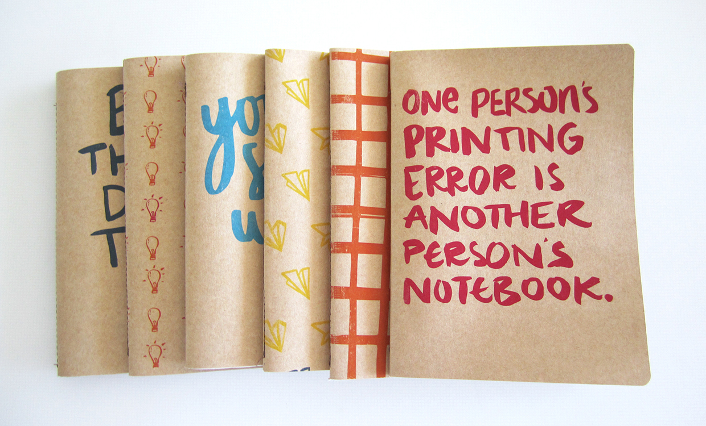
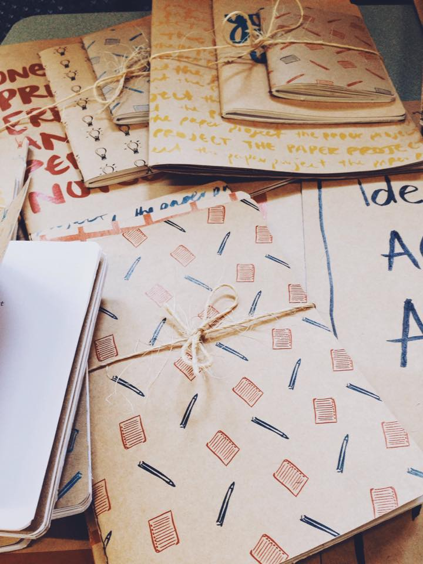
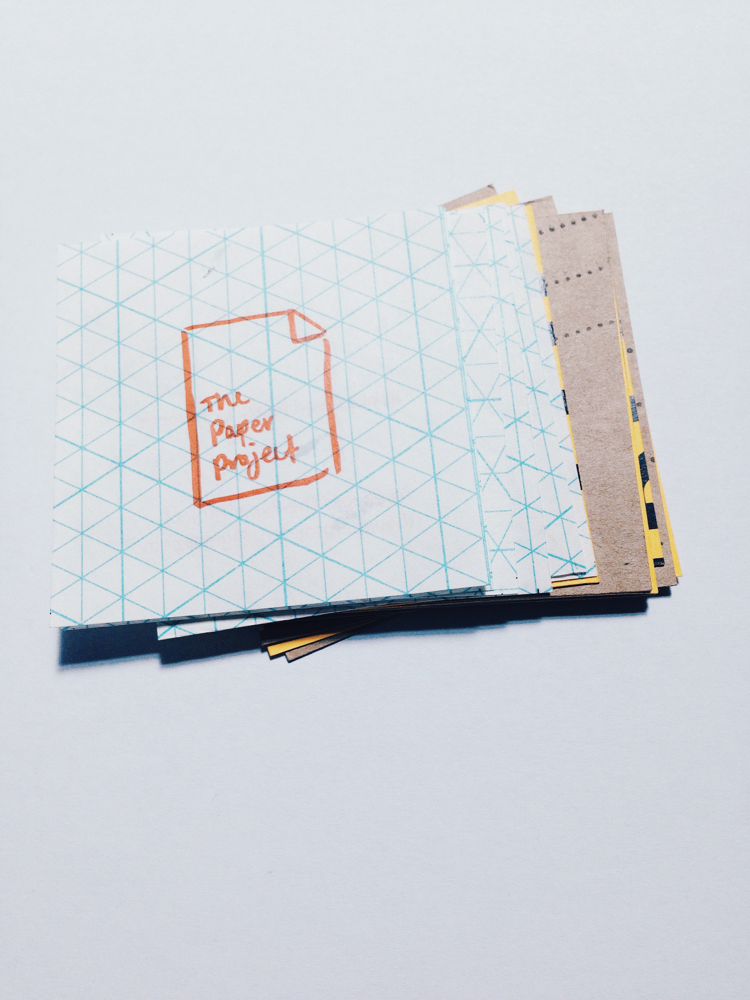
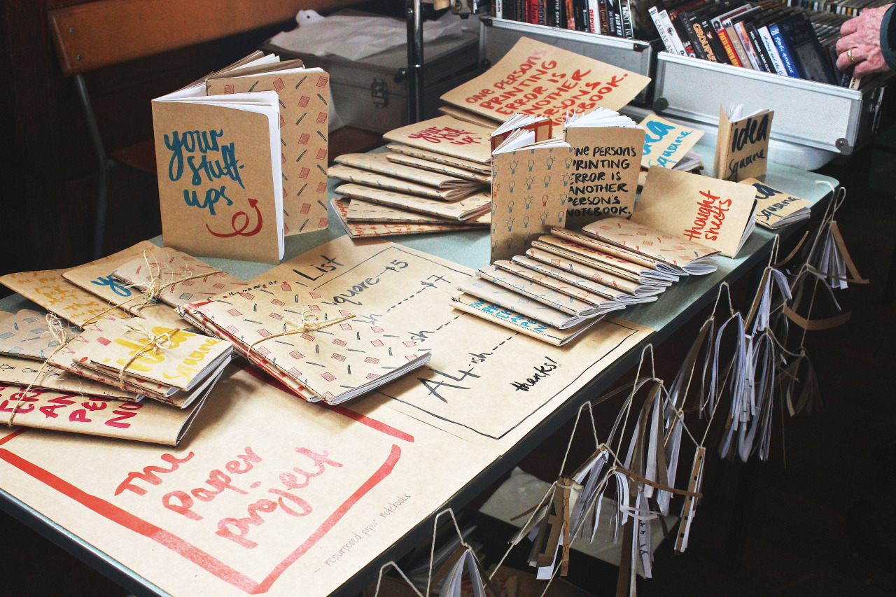
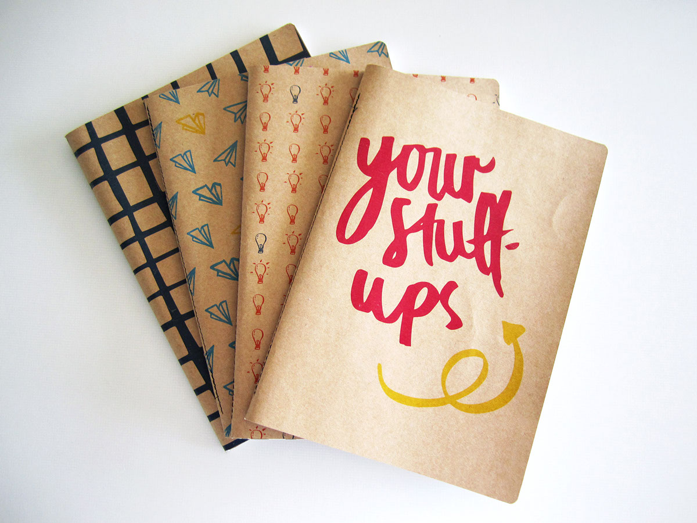
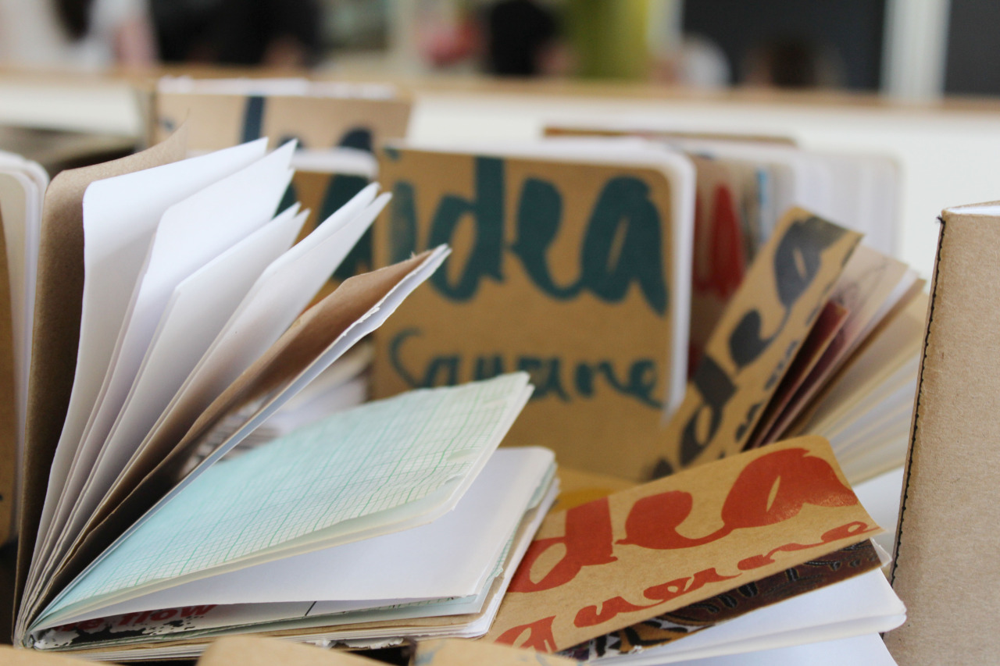
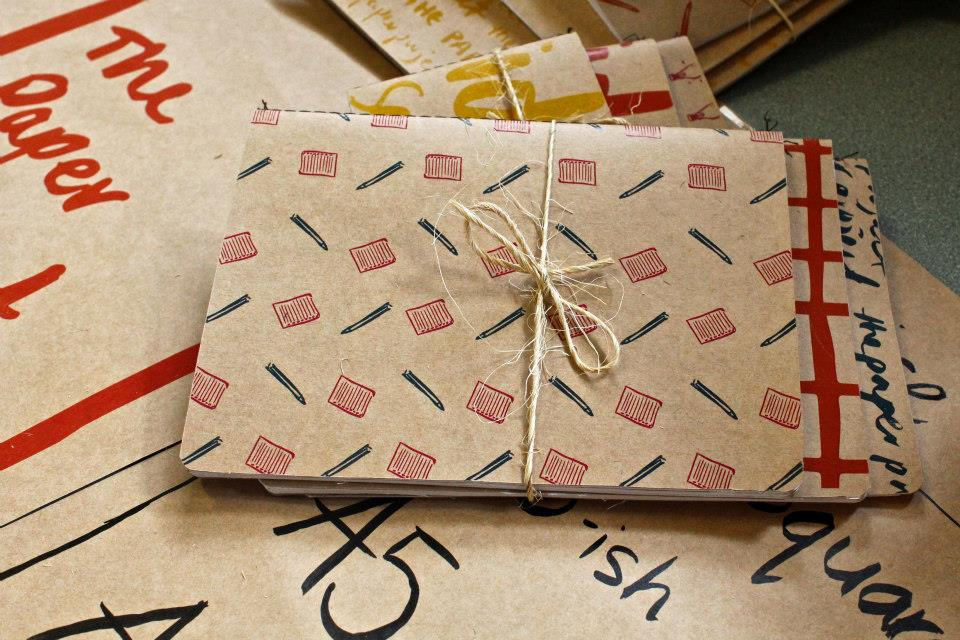

The Paper Project
2014-2015
Massey University recycles, on average, 26 tonnes of paper every year. We decided this paper could be put to better use. Most of the waste paper was sourced from the design school where the paper thrown out is hardly used, blank on one side, or completely blank all together. We also wanted to showcase the students design work, this paper was used as end covers which made each book unique and awesome to look at.






